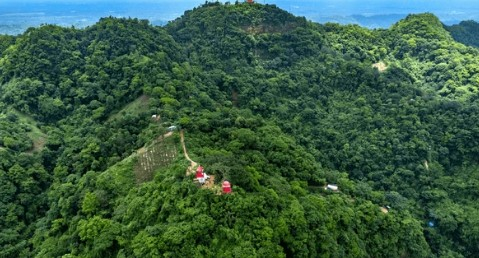
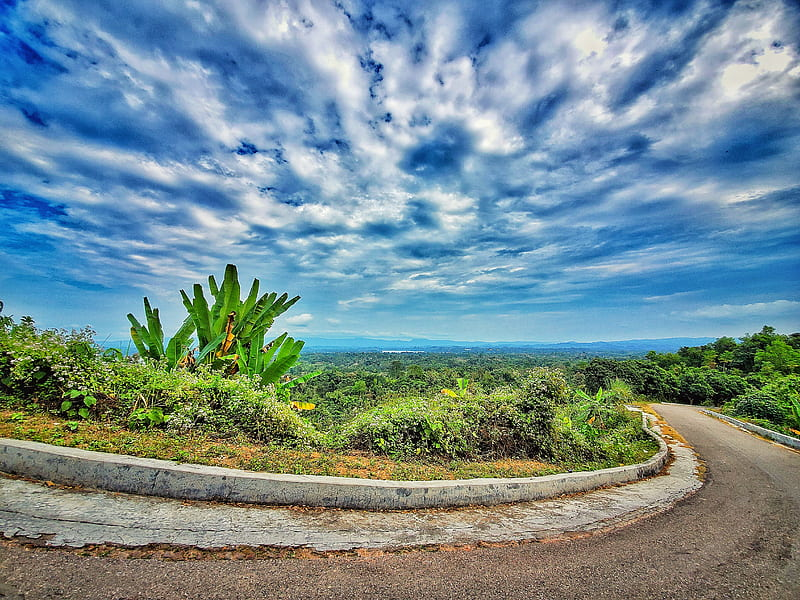
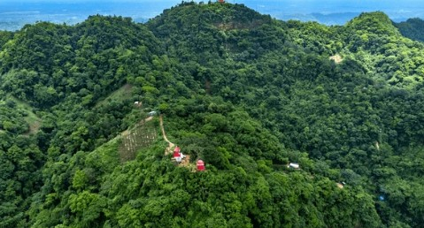
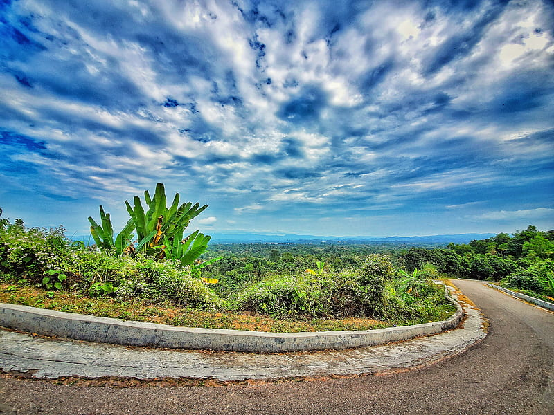

Sundarban
The world's largest mangrove forest — Bengal tigers, river cruises, and dramatic sunsets.
View photos →From Sundarbans mangroves to the tea gardens of Sylhet — explore curated destinations, photos, and travel tips.
Hand-picked places across Bangladesh for nature lovers, history buffs, and city explorers.
The world's largest mangrove forest — Bengal tigers, river cruises, and dramatic sunsets.
View photos →
Sajek Valley is known for its cloud-covered hills, serene landscapes, and vibrant indigenous culture.
View photos →Sitakunda is famous for adventurous hiking trails, mountain waterfalls, and views from Chandranath Hill.
View photos →Bandarban offers majestic green mountains, tribal heritage, and hilltop viewpoints like Nilgiri and Nilachal.
View photos →
One of the longest natural sea beaches in the world — golden sands and seaside markets.
View photos →Jaflong is a scenic riverside destination in Sylhet, known for crystal-clear water and rolling stones.
View photos →
Saint Martin’s Island — Bangladesh’s only coral island with clear blue waters and white sandy beaches.
View photos →
Rolling tea estates, tribal culture, and quiet homestays — the tea capital of Bangladesh.
View photos →A small gallery showcasing the colors and landscapes of Bangladesh.

 





Helpful guidance to make your journey safer, enjoyable, and well-planned.
Want a printable travel guide or help planning a route? Contact us.